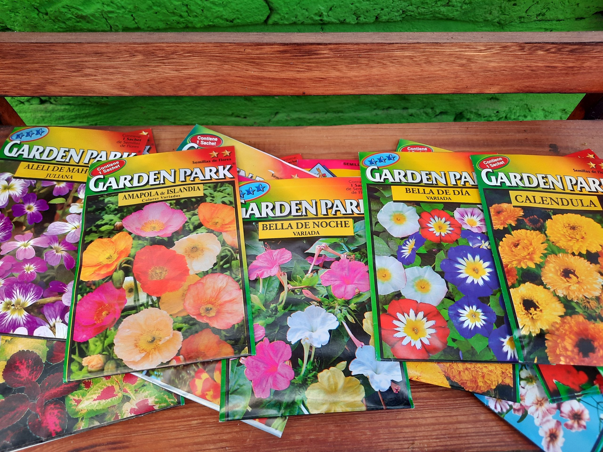

Tierra de Hojas
Un sustrato natural que mejorará la vida de sus plantas

Semillas
Variados tipos de semillas para su jardín

Maceteros
Fabricados de materiales que permiten el buen cuidado de sus plantas
Nuestos productos
Contamos con una amplia variedad de productos naturales que ayudarán al crecimiento de sus plantas, productos que además de nutrir, le conformaran parte de su jardín de forma amistosa y armoniosa. Nuestros productos cuentan con un encanto que cuida el medio ambiente, evitando los productos tóxicos y no orgánicos.
En este sitio web encontraras lo que necesites para cultivar, decorar y hacer mas vivo tu jardin y a precios lo más accesible para la comodidad de tu bolsillo.